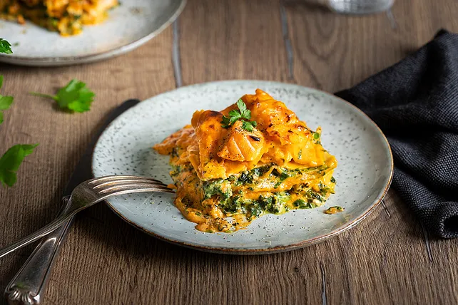

Lachs-Lasagne mit Spinat
Zutaten
| 8 | Lasagneplatte |
| 200 g | geriebener Käse |
| 1 Pck. | Rahmspinat |
| 300 g | Lachsfilet |
| 250 ml | heiße Milch |
| 100 ml | süße Sahne |
| 100 ml | Wasser |
| 1 1/2 EL | Mehl |
| 1 EL | Butter |
| 2 EL | Tomatenmark |
| Pfeffer | |
| Knoblauchsalz | |
| Zwiebelsalz |
Zubereitung
- Die Lachsfilets rechtzeitig aus dem Gefrierfach nehmen und im Kühlschrank auftauen lassen. Nach dem Auftauen den Lachs in kleine Würfel schneiden und beiseite stellen.
- Den Rahmspinat gemäß den Anweisungen auf der Packung auftauen.
- In einem Topf die Margarine bei mittlerer Hitze schmelzen. Das Mehl hinzufügen und unter ständigem Rühren anschwitzen, bis eine glatte Paste entsteht (Roux). Nach und nach die heiße Milch unter ständigem Rühren einfüllen, um Klumpen zu vermeiden. Die Sahne und das Wasser hinzufügen und weiter rühren, bis die Sauce glatt und leicht angedickt ist. Mit Pfeffer, Knoblauchsalz und Zwiebelsalz abschmecken. Das Tomatenmark unterrühren, bis es gleichmäßig in der Sauce verteilt ist.
- Den Backofen auf 180°C (Ober-/Unterhitze) vorheizen.
- Eine Auflaufform leicht einfetten. Eine dünne Schicht der Béchamelsauce auf den Boden der Form geben.
- Eine Schicht Lasagneplatten auf die Sauce legen, sodass der Boden der Form bedeckt ist.
- Die Hälfte des aufgetauten Rahmspinats gleichmäßig auf den Lasagneplatten verteilen. Die Hälfte der Lachswürfel auf den Spinat legen.
- Eine weitere Schicht Béchamelsauce über den Spinat und den Lachs geben.
- Eine weitere Schicht Lasagneplatten auf die Sauce legen. Den restlichen Spinat und die restlichen Lachswürfel darauf verteilen. Mit einer weiteren Schicht Béchamelsauce bedecken.
- Eine letzte Schicht Lasagneplatten auf die Sauce legen. Die restliche Béchamelsauce darüber verteilen.
- Den geriebenen Käse gleichmäßig über die oberste Schicht der Lasagne streuen.
- Die Auflaufform in den vorgeheizten Backofen stellen und die Lasagne etwa 35-40 Minuten backen, bis sie goldbraun und blubbernd ist.
- Die Lasagne aus dem Ofen nehmen und einige Minuten abkühlen lassen, bevor sie serviert wird.
- Die Lasagne in Stücke schneiden und auf Tellern anrichten.